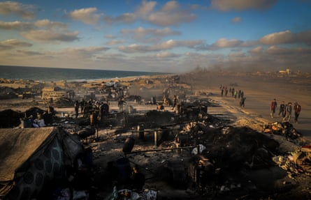
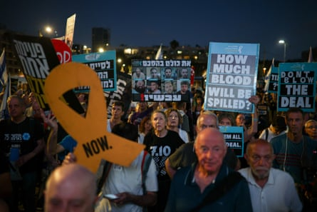

Hamas leaders are close to accepting a proposed deal for a ceasefire in Gaza but want stronger guarantees that any pause in hostilities would lead to a permanent end to the 20-month war, sources close to the militant Islamist organisation have said.
Hamas officials met on Thursday in Istanbul to discuss the ceasefire proposals and later issued a statement confirming they were talking to other “Palestinian factions” before formally announcing a response.
The militant Islamist group has come under immense pressure in recent months, with its military leadership decimated and the Israeli military forcing its fighters out of former strongholds in the southern and central parts of Gaza.
In recent days, Israel has ramped up its offensive , launching an intense wave of airstrikes across Gaza, killing more than 250 Palestinians, according to medical and civil defence officials, including many women and children.
Hardline factions within Hamas have now reluctantly accepted the need for a ceasefire to allow the organisation to regroup and plan a new strategy, one source familiar with the internal debate said.
Since a previous ceasefire collapsed in March , more than 6,000 people have been killed in Gaza and an acute humanitarian crisis has worsened.
Efforts for a new truce in Gaza gathered momentum after the US secured a ceasefire to end the 12-day conflict between Israel and Iran last month.
On Tuesday, Trump announced that Israel had accepted the conditions needed to finalise a 60-day ceasefire, during which the parties will work to end the war. When asked on Friday if Hamas had agreed to the latest ceasefire deal framework, he said: “We’ll see what happens, we are going to know over the next 24 hours.”
Benjamin Netanyahu, Israel’s prime minister, is expected to fly to Washington on Sunday for talks with Trump about the war in Gaza, the recent war between Israel and Iran, and other regional issues.
Netanyahu has long resisted a permanent end to the war in Gaza, partly to retain the support of far-right allies in his ruling coalition. But Israel’s successes in the war with Iran have strengthened his political position and opinion polls in Israel show strong support for a deal.
“Judging by the signals from Hamas, there is a high probability that we will start proximity talks in the next few days. If there is consent to proximity talks, there will be a deal,” senior Israeli officials told Channel 12, a big Israeli TV network.
Other Israeli officials told Reuters that preparations were in place to approve the ceasefire deal and that an Israeli delegation was getting ready to join indirect talks brokered by Qatar and Egypt to cement the deal if Hamas responded positively.
The proposal includes the release of 10 living Israeli hostages held in Gaza since the Hamas attack into southern Israel in October 2023 that triggered the conflict, and the return of the bodies of 18 more in exchange for Palestinian prisoners held in Israeli jails, an official familiar with the negotiations said on Thursday.
Hamas seized 251 hostages during the 2023 attack. Less than half of the 50 who remain in Gaza are believed to be alive.
Aid would enter Gaza immediately under the agreement, and the Israeli military would carry out a phased withdrawal from parts of the territory, according to the proposal. Negotiations would immediately start on a permanent ceasefire.
“We sure hope it’s a done deal, but I think it’s all going to be what Hamas is willing to accept,” Mike Huckabee, the US ambassador to Israel, told Israel’s Channel 12 on Thursday. “One thing is clear: the president wants it to be over. The prime minister wants it to be over. The American people, the Israeli people, want it to be over.”
The delivery of more aid to Gaza has been a principal demand of Hamas throughout negotiations. Israel imposed an 11-week total blockade in March, which was only slightly eased in May under huge international pressure as famine loomed.
Palestinians pass makeshift facilities where alternative fuel is produced due to Israel's blockade and the prolonged closure of border crossings.Photograph: Anadolu/Getty
The Gaza Humanitarian Foundation (GHF), a secretive private organisation backed by the US and Israel that was charged with delivering food in Gaza, has been dogged by controversy. Hundreds have died under Israeli fire as they sought aid at the GHF’s hubs and after gathering in crowds at locations where convoys sent by the UN have been stopped.
On Friday, a report by the BBC quoted a former GHF employee describing colleagues firing towards Palestinians who had posed no threat and that he had witnessed several occasions in which Palestinians appeared to have been seriously hurt.
The GHF employee told the BBC, he and others had been given no clear rules of engagement or standard operating procedures, and were told by one team leader: “If you feel threatened, shoot – shoot to kill and ask questions later.”
The GHF said the allegations, which were also made by former employees quoted by the Associated Press on Thursday, were categorically false and that no civilians ever came under fire at their distribution sites. The Israeli military has denied any intent to harm civilians seeking aid, saying it only fired warning shots.
Speaking to journalists while on his way to a rally in Iowa on Thursday, Trump said: “I want the people of Gaza to be safe. That’s more important than anything else. They’ve gone through hell.”
Netanyahu visited Israel’s Nir Oz kibbutz on Thursday for the first time since the 2023 Hamas attack. The community was one of the worst-hit in the attack, with nearly one in four residents kidnapped or killed.
People take part in a protest demanding the release of all hostages kidnapped during the 7 October 2023 attack on Israel by Hamas, and against the Israeli government and Benjamin Netanyahu in Tel Aviv on 3 July.Photograph: Shir Torem/Reuters
Netanyahu said: “I feel a deep commitment – first of all to ensure the return of all of our hostages, all of them. There are still 20 who are alive and there are also those who are deceased, and we will bring them all back.”
The Israeli prime minister has been heavily criticised for refusing to take responsibility for the failures that allowed the 2023 attack, during which Hamas-led militants killed 1,200, mostly civilians, and has been repeatedly accused of prioritising his political survival over the fate of the hostages.
Israel’s retaliatory military campaign has killed at least 57,000 people in Gaza, also mostly civilians, according to a count by the territory’s Ministry of Health that is considered reliable by the UN and many western governments.
The Israeli military said it “follows international law and takes feasible precautions to mitigate civilian harm” when striking “terrorist targets”.